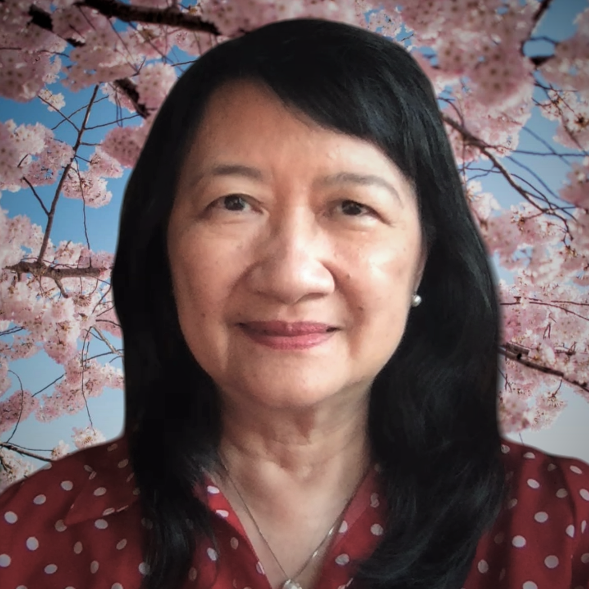

Founder & President

Hello, I am Sik Lee Dennig or Jēung Sehk-leih (張錫莉) in Cantonese. I was born in Hong Kong to parents from
Eastern China. I grew up in a multilingual environment in which Cantonese mingled with different varieties
of the Wu language (吳語). I hold a master’s degree in Psycholinguistics from the University of Alberta,
Canada and a Ph.D. in Educational Linguistics from Stanford University, USA. I have taught language and
linguistics courses in Hong Kong, Japan, Canada, and the U.S. The one that I'm most passionate about is
Cantonese. Preserving Cantonese has become my lifelong mission..
Graduate Education:
-
PhD Dissertation: Cheung, Sik Lee. (1991).
The Acquisition of Locative Constructions by Cantonese
Children.
Stanford University, CA, USA.
-
Master Thesis: Cheung, Sik Lee. (1986).
Anaphora Production in Cantonese Narration.
University of Alberta, Alberta, Canada.
Professional Certification:
- Certified ILR Cantonese Oral Proficiency Interview Tester
- Certified ACTFL Chinese Writing Proficiency Tester
-
Certified ACTFL Cantonese Oral Proficiency Interview by Computer
Tester
Advisor
We're very honored to have Professor Marjorie Chan of Ohio State University as our advisor. A pioneer in so
many ways, she is also a Cantonese heritage speaker. Born in Jūngsāan 中山 in the Pearl River Delta, Professor
Chan grew up in Vancouver, Canada. She studied the Jūngsāan variety of Cantonese in her master’s thesis in
1980, co-founded the Cantonese Language Association in 1994, hosted the inaugural Workshop on Innovations in
Cantonese Linguistics in 2012, and created a Cantonese course for Mandarin speakers at Ohio State University
in 2015. For a partial list of her accomplishments, please visit her website. I’ll be interviewing her about her experience growing up in Vancouver’s
Chinatown in April. Stay tuned!
Volunteers
Website Manager
Teams
Cantonese Instructors
- Dennig, Sik Lee
- Lau, Alexandra
- Lum, Zack
- Tse, Keith
Cantonese Community School Liaison
- South Shore Chinese School
Cantonese Language Teachers Association
- Coordinator: Wong, Kristy
Chinatowns Project
- Interviewer and Video Editing: Chan, Brittany
- Team Coordinators
- Boston: Hsu, Kevin
- Los Angeles Chinatown: Cong, David; Tran, Helen
- New York: pending
- Oakland: pending
- San Francisco: Hsu, Kevin; Szeto, Kimberly
- Toronto: Chan, Brittany; Lum, Zack
- Vancourver: pending
Content Development
- Cantonese Movies: Dennig, Sik Lee; Lo, Kevin
- CantoTalk Music Podcast: Chung, Edgar
- Environmental Education: Dennig, Paul
- Pedagogy and Social Justice: Wong, Casey
- Vlog: Chan, Brittany
Content Development Support
- CantoTalk vocabulary files: Fung, Xian
- Recording: Lo, Kevin
- Recording: Lum, Zack
- Translation: Chen, Yan
- Translation: Waye, Agnes
Curriculum Development
- Chan, Brittany
- Dennig, Sik Lee
- Quan, Alex
- South Shore Chinese School
Fundraising
- Li, Alex
- Lui, Elliott
- Mass, Lev
- Shum, Jared
Graphic Design
- Chung, Edgar
- Kurzynski, Maciej
- Lau, Alexandra
- Ma, Jessika
Movie Night Cantonese Practice Tutors
Nonprofit
Outreach & Membership
Parent Groups Liaison
Publicist & Social Media
Teacher Training
Technology Support
- Benson, Andrew
- Lau, Mingfei
If you're interested in any of the above roles, please contact Sik Lee Dennig at dennig@gmail.com!